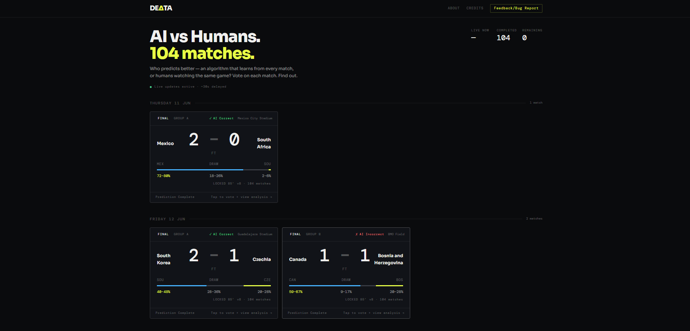
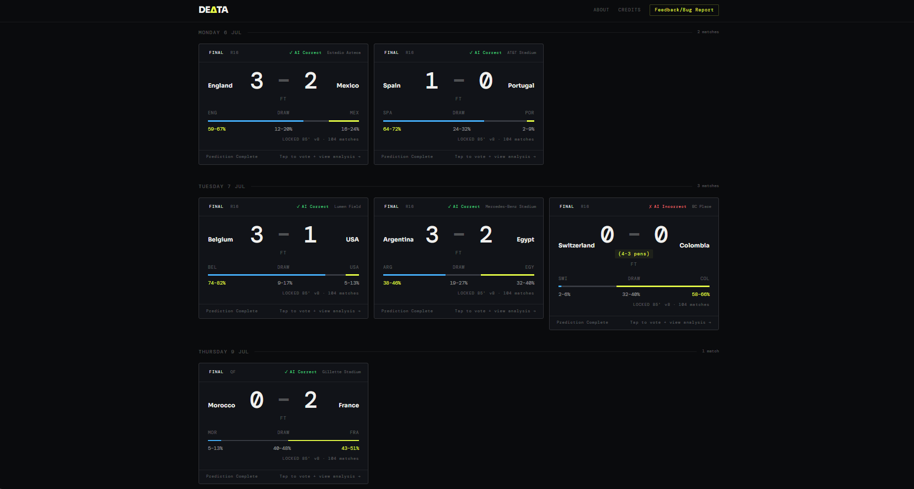
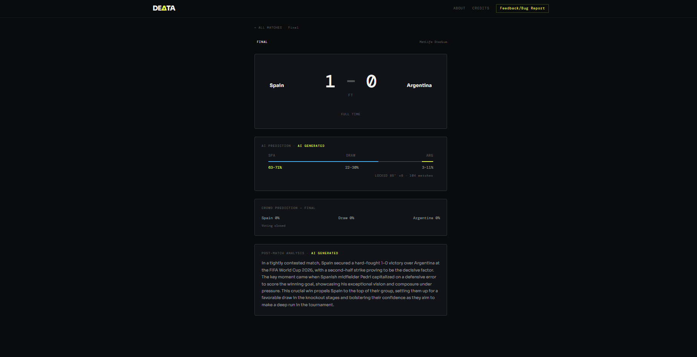

This page is a static engineering archive. The live backend and database were retired after the tournament ended. All data reflects the tournament as it happened.
An autonomous machine learning system that experienced the FIFA World Cup 2026 one match at a time — predicting, then retraining, then predicting again, across all 104 matches of the tournament.
Delta26 was a real-time prediction system that ran across every one of the 104 matches in the 2026 FIFA World Cup. Before each match it produced a prediction; after each match, it retrained on the newly completed result before the next kickoff.
Published predictions never changed. Retraining only ever affected how the model would perform on matches still to come — never the record of what it had already predicted. That distinction was the point of the project: not to build the most accurate football model possible, but to observe how a continuously learning system actually behaves when it's tested live, in public, for 39 consecutive days.
02 — Architecture
How a prediction moved from raw data to the screen.
Ten layers, from live data collection through to the interface, coordinated so that every match moved through the same pipeline — regardless of whether it was a group-stage opener or the final.
Live scores entered through six confirmed sources with a search-API fallback, were validated against hallucination guards, converted into 24 contextual features, and run through three prediction methods in parallel before an LLM layer generated human-readable context for the frontend.
72 matches. The model retrains after each one, building its first read on team strength.
June 28 – July 8
Knockout Stage
Round of 32 and Round of 16 — 24 matches, single elimination.
July 9 – 12
Quarter-Finals
Live score fetching moves to a search-API fallback as JavaScript-rendered sources become unreliable.
July 14 – 15
Semi-Finals
Spain and Argentina both advance to the final.
July 19
Final — Archived
Spain 1–0 Argentina, after extra time. The system is retired the same week.
05 — Results
The final numbers.
0
Matches Predicted
0
Days
0
Correct Predictions
0
Tournament Accuracy
0
Final XGBoost Validation
0
Peak Validation Accuracy
0
Model Versions
The model correctly predicted 48 of 104 outcomes — just under a coin flip, and roughly in line with published benchmarks for football prediction models, where match outcomes are famously low-scoring and high-variance.
✓ 48 correct · 46.2%
✗ 56 incorrect · 53.8%
Notable upsets the model missed
France vs England (3rd place)4–6Upset
Brazil vs Morocco1–1AI: Brazil
Netherlands vs Sweden0–0AI: Sweden
Correct calls (sample)
Sweden vs Tunisia5–1✓ Correct
Argentina vs Switzerland (QF)3–1✓ Correct
Spain vs France (SF)2–0✓ Correct
06 — Metrics Explained
Two accuracy numbers, two different questions.
46.2%
Tournament match outcome accuracy
The share of all 104 published, pre-match predictions that correctly called the outcome — win, loss, or draw — as it actually happened live. This is the honest, real-world number.
61.9%
Final XGBoost validation accuracy
How accurate the final model version (v8) was on a held-out validation split of completed matches, measured after all retraining was finished. This describes the model, not the live predictions it actually served.
07 — Learning Curve
The model got better. Then it got harder.
Group Stage
62.5%
R32 / R16
68.4%
QF + SF
64.2%
Final
61.9%
Retraining improved accuracy through the group stage, as the model accumulated enough matches to learn genuine team strength. Accuracy peaked at 68.4% right after the Round of 16 — then declined as the knockout rounds paired increasingly evenly matched elite teams, where historical form gives a statistical model far less to work with. More data did not always produce a better real-world prediction. Published predictions stayed frozen throughout — this curve describes the model underneath, not any prediction that was already shown to a viewer.
08 — Engineering Challenges
What actually broke, and what it took to fix.
Continuous Retraining
Model retrained from scratch after every completed match, using a chronological split so no future match ever leaked into training data.
Live Data Collection
JavaScript-rendered sources blocked HTML scraping, so live scores from the quarter-finals onward moved to a search-API fallback.
Prediction Versioning
Eight model versions shipped across the tournament. Published predictions were frozen at serve time, never rewritten by later retraining.
SSE Streaming
Server-Sent Events pushed live match state and predictions to the frontend without polling.
Database Migration
The original free PostgreSQL instance expired mid-tournament. Migrated to a session-pooled connection with zero data loss.
AI Summaries
An LLM layer auto-generated a pre-match brief and post-match debrief for every one of the 104 matches.
Automation
A scheduler ran keep-alive pings, source health checks, and brief generation on a fixed cadence with no manual triggers.
Free-Tier Infrastructure
The entire system ran on free-tier hosting and database plans for all 39 days of the tournament.
Community Voting
Browser fingerprinting, trust scoring, and an 85-minute lock protected a crowd-prediction feature that saw fewer than 20 votes across the entire tournament.
Deployment
Backend and frontend deployed and coordinated separately, behind a shared CDN layer, across the full build.
09 — Lessons Learned
What this project actually taught.
01
Historical validation is not real-world performance
A 61.9% validation accuracy and a 46.2% live accuracy measure different things. A model can be internally consistent and still lose to variance in single-elimination football.
02
Production ML is mostly software engineering
Of the system's ten architectural layers, only one directly touched the model. The rest were data fetching, validation, state management, and delivery.
03
Reliable pipelines matter more than model choice
The largest accuracy gain in the project came from fixing live data collection, not from any change to the statistical or gradient-boosted models.
04
Retraining has diminishing returns
Accuracy peaked after the Round of 16, then declined as the tournament reached its most evenly matched games — regardless of how many additional matches the model had seen.
05
Building a feature is not the same as getting it used
The voting system had real infrastructure behind it — fingerprinting, trust scoring, rate limiting — and still saw fewer than 20 votes across 104 matches. Getting someone to visit once is a different problem from getting them to come back, and neither is solved by the engineering alone.
10 — Development Journey
Built incrementally, over 39 days.
Delta26 was not built in advance and switched on. Development continued throughout the tournament itself, visible across the project's public GitHub commit history, with the system evolving in response to what broke during live matches.
Phase 1
Foundation
Data fetcher, parser, and prediction model built before any frontend existed.
Phase 2
Infrastructure
Database connectivity fixes, numerical stability guards, and deployment issues resolved under live conditions.
Phase 3
Live Data Redesign
HTML scraping replaced with a search-API fallback once JavaScript rendering made scraping unreliable from the quarter-finals on.
Phase 4
Sustained Operation
Score updates, retraining, and incremental UX fixes, repeated for every match through to the final.
11 — Gallery
The interface, frozen in its final state.

Homepage · Live prediction feed

AI Correct / Incorrect indicator

Post-match debrief · Final
12 — Reflection
This was never about calling the score.
Delta26 was never intended to perfectly predict football — no model reliably does, and 46.2% accuracy against a genuinely low-scoring, high-variance sport was an expected outcome, not a shortfall.
The project's actual purpose was to understand how a continuously learning prediction system behaves when it operates live, in public, across a full international tournament: what breaks under real data conditions, how retraining actually affects performance match to match, and where the gap sits between a model's offline validation numbers and what it produces under live conditions.
13 — Archive Notice
Project Status: Archived
Archived
The backend and database have been retired now that the tournament has ended, and compute resources have been reallocated. This page is a static, permanent record of the system, its architecture, and its results.